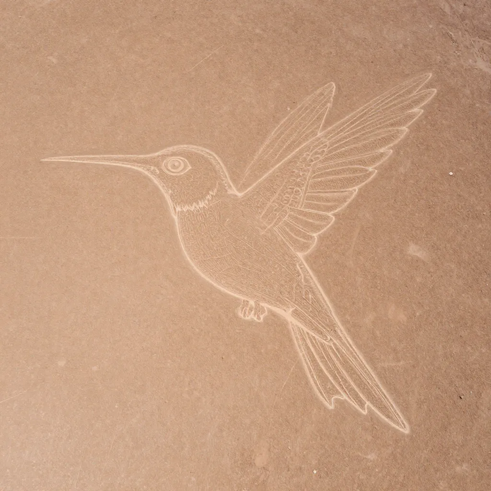
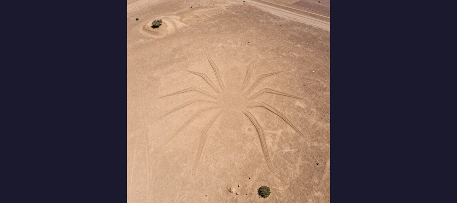

The Nazca Lines: Ancient Desert Geoglyphs That Can Only Be Fully Seen From the Sky

The Nazca Lines in southern Peru. Over 800 straight lines, 300 geometric shapes, and 70 animal figures were etched into this desert between 500 BCE and 500 CE. Their purpose remains one of archaeology's greatest mysteries.
Spread across nearly 400 square miles of the arid Pampa de Jumana in southern Peru lies one of the most astonishing — and inexplicable — achievements of the ancient world. Over 800 straight lines, some stretching as far as 30 miles across the desert floor. Over 300 geometric shapes: triangles, trapezoids, rectangles, and spirals. And over 70 enormous animal and plant figures — a hummingbird, a spider, a monkey with a spiral tail, a killer whale, a condor, a dog, a pelican, hands, a tree, and flowers — etched into the earth at scales that defy comprehension. The largest figures span more than 1,200 feet across, as long as the Empire State Building is tall. Some of the straight lines extend to the horizon and beyond, carved with a straightness that would challenge modern surveying equipment. And yet these extraordinary geoglyphs were created by a pre-Columbian culture working without aerial perspective, without machinery, and without any written language — between 500 BCE and 500 CE, more than 1,500 years before the invention of the airplane. For centuries, the lines were invisible to anyone standing on the ground. It was not until the 20th century, with the rise of commercial aviation, that the full scale of what the Nazca people had created was finally revealed — and one of the greatest archaeological mysteries in the world was born.
The Nazca Lines have inspired wonder, obsession, and no shortage of wild speculation. Were they an astronomical calendar, as the German mathematician Maria Reiche spent 40 years arguing? Were they sacred pathways for ritual processions, as many archaeologists now believe? Were they messages to the gods — a desperate plea for rain in one of the driest deserts on Earth? Or, as the bestselling author Erich von Däniken famously claimed, were they landing strips for extraterrestrial spacecraft? The lines have attracted astronauts, mathematicians, archaeologists, and pseudoscientists in equal measure. They were designated a UNESCO World Heritage Site in 1994, and new figures are still being discovered — most recently with the help of artificial intelligence and drone surveys. Yet despite decades of research, no single theory fully explains why the Nazca people invested such enormous effort into creating designs that they themselves could never see from the ground. The Nazca Lines remain one of the most tantalizing puzzles in archaeology — a mystery written on the Earth itself, in lines so vast they can only be read from the sky.
Discovery: From Desert Footprints to Aerial Revelation
The Nazca Lines existed in plain sight for thousands of years — but they were hiding in a desert so vast and so flat that their patterns were nearly invisible from the ground. The first scholar to recognize them was the Peruvian archaeologist Toribio Mejía Xesspe, who noticed the lines while walking through the desert in the 1920s. From ground level, the lines appeared as faint trails cutting across the desert floor — curious, but not obviously significant. It was only with the rise of commercial aviation in the 1930s and 1940s that pilots flying over southern Peru began to report seeing enormous geometric patterns and animal shapes etched into the desert below. The lines, invisible to anyone standing on the ground, became breathtakingly clear from a few hundred feet in the air.
The breakthrough came in 1941, when American professor Paul Kosok of Long Island University visited the Nazca desert to study ancient irrigation systems. On June 22 — one day after the winter solstice — Kosok found himself standing at the end of one of the long straight lines. As the sun began to set, he looked up and saw that the line he was standing on pointed directly at the setting sun. The alignment was too precise to be coincidental. Kosok was stunned. He called the 310-square-mile expanse of desert "the largest astronomy book in the world" and devoted himself to studying the lines' astronomical alignments. Kosok's work attracted the attention of a German mathematician named Maria Reiche, who would dedicate the rest of her life — more than 50 years — to studying, mapping, and protecting the Nazca Lines.
📚 Maria Reiche: The Lady of the Lines
Maria Reiche (1903-1998) was a German-born mathematician and archaeologist who became the foremost scholar of the Nazca Lines and their most passionate defender. Arriving in Peru in the 1930s, she began working with Paul Kosok in 1946 and continued studying the lines for more than half a century. Reiche lived in a small house near the desert so she could personally protect the lines from careless visitors and development. She mapped every line and figure she could find, often working alone in the desert for weeks at a time, and published her findings in books and academic papers. Her astronomical calendar theory held that the lines were aligned with the positions of the sun, moon, and stars at specific times of the year, functioning as a giant calendar for agricultural and ceremonial purposes. While later research has challenged some of her specific alignments, her contribution to the preservation and documentation of the lines is immeasurable. Reiche lobbied the Peruvian government to protect the site, and her efforts were instrumental in the lines receiving UNESCO World Heritage status in 1994. She was partially blind by the end of her life but continued working until her death at age 95. Reiche's devotion to the Nazca Lines recalls the single-minded passion of other great archaeological pioneers, from Heinrich Schliemann's obsessive search for Troy to the scholars who painstakingly pieced together the fragments of the Library of Alexandria.

The Nazca hummingbird, one of the most iconic geoglyphs, spans approximately 320 feet. Like all Nazca figures, it can only be fully appreciated from the air — which has fueled centuries of speculation about its purpose.
How the Lines Were Made — And How They Survived
The technique used to create the Nazca Lines is remarkably simple — so simple that it is almost more remarkable that they survived for 2,000 years. The desert surface of the Pampa de Jumana is covered with a layer of dark reddish-brown iron oxide-coated pebbles. Beneath this surface layer lies lighter yellowish-white earth. The Nazca people created their designs by simply removing the dark surface pebbles to reveal the lighter soil beneath. The contrast between the dark surface and the light subsurface creates the visible lines. No digging was required — the lines are only a few inches deep.
The preservation of the lines is due to one of the most extreme climates on Earth. The Nazca Desert is one of the driest places on the planet, receiving less than one inch of rain per decade. The combination of virtually zero rainfall, minimal wind erosion (the pebbles hold the surface in place), and the stable, windless conditions created by the desert's geography has kept the lines remarkably intact for over two millennia. The same aridity that made the region nearly uninhabitable also preserved one of humanity's greatest artistic achievements.
Engineering at Scale: How Did They Do It?
The question that has fascinated researchers for decades is not how the lines were made — the technique is straightforward — but how the Nazca people achieved such precision at such enormous scales without being able to see the designs from above. How do you draw a perfect hummingbird 300 feet long when you're standing on the ground, looking at it from ground level?
Experimental archaeology has provided a plausible answer. Researchers have demonstrated that the Nazca people likely used a simple but effective method: they created small-scale models of their designs first, then used a system of sight lines and stakes to scale the designs up to their final size. By placing stakes at key points and using long ropes or strings to maintain straight lines and consistent curves, a team of workers could transfer a small design to the desert floor with remarkable accuracy. The method has been experimentally verified: modern researchers using only stakes, string, and the same pebble-removal technique have successfully recreated Nazca-style figures at full scale. No aliens required — just human ingenuity, careful planning, and a lot of labor.
The Purpose: Calendar, Temple, or Plea for Rain?
The most debated question about the Nazca Lines is not how they were made, but why. What purpose could justify the enormous investment of labor required to carve hundreds of figures and thousands of lines into one of the most inhospitable deserts on Earth? Over the decades, several competing theories have emerged:
- Astronomical calendar (Kosok/Reiche) — The earliest and most famous theory holds that the lines were aligned with the positions of the sun, moon, and stars at specific times of the year, functioning as an enormous calendar for tracking solstices, equinoxes, and seasonal changes. Paul Kosok's observation that one line pointed directly at the solstice sunset launched this theory, and Maria Reiche spent decades mapping astronomical alignments. However, later statistical analyses have shown that many of the "alignments" could be coincidental, and not all lines correspond to astronomical events.
- Ritual processional pathways — The current leading theory among archaeologists, championed by scholars like Johan Reinhard, proposes that the lines were sacred pathways used for religious ceremonies and ritual processions. The straight lines would have been walked as part of pilgrimages, with the animal figures serving as symbolic markers or totems along the route. Evidence for this includes the discovery of pottery shards, offerings, and ritual objects along the lines.
- Water cult rituals — Perhaps the most compelling theory for a culture living in one of the world's driest deserts: the lines were part of a water cult, designed to appeal to the gods for rain. Many of the lines connect to or point toward aquifer access points and underground water sources. The spider figure may represent a water-dwelling creature; the hummingbird and other figures may have been associated with fertility and water. In this interpretation, the lines were not practical tools but desperate prayers — monumental pleas for the most precious resource in an extreme desert environment, much as the builders of the moai of Easter Island may have been appealing to supernatural forces for protection and prosperity.
- Shamanic vision trances — Some researchers have proposed that the animal figures represent spirit animals seen during shamanic rituals, possibly involving psychoactive plants like the San Pedro cactus. The figures' supernatural scale and the fact that they can only be fully seen from an elevated, "spirit-like" perspective supports this interpretation.
👽 Ancient Astronauts: The Pseudoscience of the Nazca Lines
In 1968, Swiss author Erich von Däniken published Chariots of the Gods?, one of the bestselling archaeology books of all time — and one of the most reviled by professional archaeologists. Von Däniken argued that the Nazca Lines were landing strips and signals for extraterrestrial spacecraft. The theory caught the public imagination and has persisted in popular culture ever since. Archaeologists have thoroughly debunked it for several reasons: the lines are far too shallow for any aircraft to land on (they are just a few inches deep); the "runways" are not flat or graded; there is no evidence of any technology beyond what the Nazca culture possessed; and the theory is fundamentally ethnocentric, assuming that indigenous people were incapable of sophisticated engineering without outside help. The real achievement of the Nazca Lines is more remarkable than von Däniken's fantasy: ordinary human beings, using simple tools and extraordinary organization, created works of art so vast they can be seen from space. The persistence of the ancient astronaut theory says more about our desire to believe in extraterrestrial intervention than about the evidence — a phenomenon also seen in the debates around the Baghdad Battery and the Antikythera Mechanism.

The Nazca spider geoglyph, one of over 70 animal and plant figures etched into the desert. Some researchers believe the spider represents a specific species found only in the Amazon rainforest, hundreds of miles away.
New Discoveries and Ongoing Threats
The Nazca Lines are not a closed chapter. New figures continue to be discovered with remarkable regularity, often using cutting-edge technology that would have been unimaginable to Maria Reiche. In 2011, Japanese researchers from Yamagata University discovered new lines using satellite imagery. Subsequent expeditions by the same team have identified dozens of previously unknown figures, including a 98-foot-long killer whale, a dancing humanoid figure, and various geometric shapes. In 2024, researchers announced the discovery of 168 new geoglyphs using artificial intelligence and drone surveys, dramatically expanding the known scope of the Nazca constructions. The AI system was trained to identify potential geoglyphs in high-resolution satellite imagery, and human researchers then verified the findings on the ground. Many of the newly discovered figures are smaller than the classic animal designs and may have been created during an earlier phase of Nazca culture.
The nearby Palpa Lines, on the hillsides adjacent to the Nazca desert, represent an equally fascinating but less well-known collection of geoglyphs. The Palpa figures depict human forms — standing figures, warriors, and anthropomorphic designs — rather than the animals that dominate the Nazca corpus. The Palpa Lines may represent an earlier or concurrent tradition and add important context to our understanding of the region's geoglyph-making cultures.
Despite their UNESCO protection, the lines face ongoing threats. Mining operations in the region have encroached on the desert. Road construction has damaged some figures. Tourism — the flights that take visitors over the lines — creates ongoing pressure on the site. In 2014, a Greenpeace protest stunt caused international outrage when activists laid out a large message near the hummingbird figure, leaving footprints and disturbing the fragile desert surface. The damage was described by Peru's deputy culture minister as "a slap in the face to every Peruvian." The incident highlighted the vulnerability of the lines and the ongoing tension between preservation and public awareness.
🌎 UNESCO and the Fight for Preservation
The Nazca Lines were designated a UNESCO World Heritage Site in 1994, recognizing their outstanding universal value as one of the most remarkable achievements of human creativity. The designation covers approximately 75,358 hectares (186,215 acres) of the southern Peruvian desert. But UNESCO status does not guarantee protection. The lines face threats from illegal mining (particularly the expansion of a nearby quarry), road construction (the Pan-American Highway already cuts through part of the site), climate change (increasingly rare but intense rainfall events can damage the fragile surface), and irresponsible tourism. The 2014 Greenpeace incident, in which activists entered a restricted area near the hummingbird figure to lay out a climate message, caused lasting damage to the desert surface and triggered a diplomatic incident between Peru and several European countries. Peru has since increased security and restricted access to the most sensitive areas, but the tension between making the lines accessible to the public and protecting them for future generations remains unresolved — a challenge familiar to anyone concerned with the preservation of the Great Sphinx of Giza or the ruins of the Lost Colony of Roanoke.
👀 Messages We Still Can't Read
The Nazca Lines are the ultimate paradox of archaeology: a message written so large it can only be seen from the sky, created by people who had no way to see it from the sky. They are simultaneously one of the simplest and most sophisticated achievements of the ancient world — made by moving rocks, yet executed with a precision and scale that still inspires awe 2,000 years later. Were they a calendar? A temple? A prayer for rain? A shamanic vision? A communal art project on the grandest scale imaginable? The answer may be all of these, or none of them. The Nazca people left no written records explaining their purpose, and the lines themselves remain stubbornly, magnificently silent. What is certain is that the Nazca Lines represent one of the most extraordinary achievements of human civilization — a collaboration of hundreds, perhaps thousands, of people over centuries, working in one of the harshest environments on Earth to create something of breathtaking beauty and enduring mystery. They remind us that the ancient world was far more sophisticated, creative, and ambitious than we often imagine. And they remind us that some mysteries are not meant to be solved — they are meant to be wondered at. The Nazca Lines are still speaking. We just haven't learned their language yet.
Frequently Asked Questions
What are the Nazca Lines?
The Nazca Lines are enormous geoglyphs — drawings made on the ground — located in the Nazca Desert of southern Peru. Created between 500 BCE and 500 CE by the Nazca culture, they include over 800 straight lines, 300 geometric shapes, and more than 70 animal and plant figures. The figures include a hummingbird, spider, monkey, killer whale, condor, and many others, some spanning over 1,200 feet across. They were made by removing dark surface pebbles to reveal lighter earth beneath.
Why can't you see the Nazca Lines from the ground?
The lines are so vast and the desert is so flat that the figures and patterns are virtually invisible from ground level. They can only be fully appreciated from the air, which is why they were not widely known until the 1930s when commercial pilots began flying over the region. Today, tourist flights offer aerial views of the lines.
Who discovered the Nazca Lines?
Peruvian archaeologist Toribio Mejía Xesspe was the first scholar to study the lines systematically in the 1920s, noticing them from the ground. American professor Paul Kosok investigated further in 1941 and proposed the astronomical calendar theory. German mathematician Maria Reiche devoted over 50 years (1946-1998) to mapping and protecting the lines.
Are the Nazca Lines alien landing strips?
No. This theory, popularized by Erich von Däniken in his 1968 book Chariots of the Gods?, has been thoroughly debunked by archaeologists. The lines are only a few inches deep — far too shallow for any aircraft to land on. They were created by the Nazca people using simple tools and extraordinary organization, as experimentally verified by modern researchers.
📖 Recommended Reading
Want to learn more? Check out The Nasca Lines by Anthony F. Aveni on Amazon for a deeper dive into this fascinating topic. (As an Amazon Associate, we earn from qualifying purchases.)
References & Further Reading
- Wikipedia: Nazca Lines — Comprehensive article covering the geoglyphs, their creation, theories, and ongoing discoveries including AI-assisted research
- Wikipedia: Maria Reiche — The German mathematician who devoted 50 years to studying and protecting the Nazca Lines
- Wikipedia: Nazca Culture — The pre-Columbian civilization that created the lines between 500 BCE and 500 CE
- UNESCO: Lines and Geoglyphs of Nasca and Palpa — Official World Heritage Site listing with detailed documentation
- Wikipedia: Erich von Däniken — The controversial author who proposed the ancient astronaut theory for the Nazca Lines
- Wikipedia: Geoglyph — Overview of large-scale ground drawings, including the Nazca Lines and other examples worldwide
Editorial note: reconstructions are continuously revised as imaging and inscription studies improve. See our Editorial Policy.